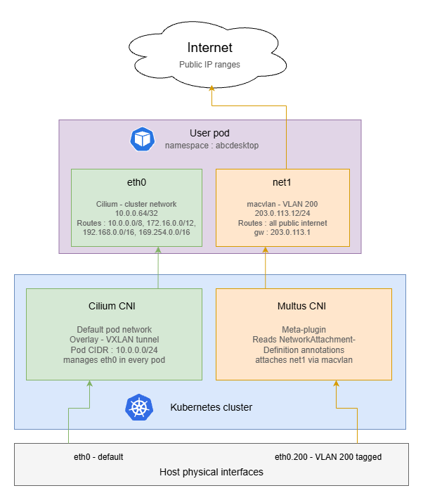

Add multiple network interfaces to user pods using VLANs
Requirements
- a Kubernetes cluster with abcdesktop installed
- cilium-cli
- multus CNI installed on your cluster
- VLAN-tagged interfaces configured on your host nodes
Note
The goal of this tutorial is to route all outgoing internet traffic through a dedicated VLAN interface, while keeping private network traffic on the default Kubernetes CNI interface (eth0).
Note
This example uses docker-test-openldap
show details
This image uses standard static groups based on RFC LDAP 4519
Below is the ship_crew group file
dn: cn=ship_crew,ou=people,dc=planetexpress,dc=com
objectclass: Group
objectclass: top
groupType: 2147483650
cn: ship_crew
member: cn=Philip J. Fry,ou=people,dc=planetexpress,dc=com
member: cn=Turanga Leela,ou=people,dc=planetexpress,dc=com
member: cn=Bender Bending Rodriguez,ou=people,dc=planetexpress,dc=com
Below is the admin_staff group file
dn: cn=admin_staff,ou=people,dc=planetexpress,dc=com
objectclass: Group
objectclass: top
groupType: 2147483650
cn: admin_staff
member: cn=Hubert J. Farnsworth,ou=people,dc=planetexpress,dc=com
member: cn=Hermes Conrad,ou=people,dc=planetexpress,dc=com
Disable Cilium CNI Exclusive Mode
By default, when Cilium is installed in a Kubernetes cluster, it operates in exclusive CNI mode, meaning it is the only plugin managing pod networking.
Before installing Multus, this behavior must be disabled to allow multiple CNI plugins to coexist. You can disable Cilium’s exclusive mode by running the following command:
cilium config set cni-exclusive false
Create NetworkAttachementDefinition
A NetworkAttachmentDefinition is a Kubernetes custom resource that describes how Multus should attach an additional network interface to a pod. You must create one for each VLAN you want to expose to user pods.
In this example, we configure a macvlan interface bound to VLAN ID 200 (eno1.200). Adapt the master nterface, subnet, IP range, and gateway to match your network topology.
Here is an example of macvlan-conf-1.yaml file.
apiVersion: "k8s.cni.cncf.io/v1"
kind: NetworkAttachmentDefinition
metadata:
name: macvlan-conf-1
spec:
config: '{
"cniVersion": "0.3.0",
"type": "macvlan",
"master": "eno1.200", # Interface on your host tagged with vlan ID 200
"mode": "bridge",
"ipam": {
"type": "host-local",
"subnet": "203.0.113.0/24",
"rangeStart": "203.0.113.10",
"rangeEnd": "203.0.113.50",
"routes": [
{ "dst": "1.0.0.0/8", "gw": "203.0.113.1" },
{ "dst": "2.0.0.0/7", "gw": "203.0.113.1" },
{ "dst": "4.0.0.0/6", "gw": "203.0.113.1" },
{ "dst": "8.0.0.0/7", "gw": "203.0.113.1" },
{ "dst": "11.0.0.0/8", "gw": "203.0.113.1" },
{ "dst": "12.0.0.0/6", "gw": "203.0.113.1" },
{ "dst": "16.0.0.0/4", "gw": "203.0.113.1" },
{ "dst": "32.0.0.0/3", "gw": "203.0.113.1" },
{ "dst": "64.0.0.0/3", "gw": "203.0.113.1" },
{ "dst": "96.0.0.0/4", "gw": "203.0.113.1" },
{ "dst": "112.0.0.0/5", "gw": "203.0.113.1" },
{ "dst": "120.0.0.0/6", "gw": "203.0.113.1" },
{ "dst": "124.0.0.0/7", "gw": "203.0.113.1" },
{ "dst": "126.0.0.0/8", "gw": "203.0.113.1" },
{ "dst": "128.0.0.0/3", "gw": "203.0.113.1" },
{ "dst": "160.0.0.0/5", "gw": "203.0.113.1" },
{ "dst": "168.0.0.0/8", "gw": "203.0.113.1" },
{ "dst": "169.0.0.0/9", "gw": "203.0.113.1" },
{ "dst": "169.128.0.0/10", "gw": "203.0.113.1" },
{ "dst": "169.192.0.0/11", "gw": "203.0.113.1" },
{ "dst": "169.224.0.0/12", "gw": "203.0.113.1" },
{ "dst": "169.240.0.0/13", "gw": "203.0.113.1" },
{ "dst": "169.248.0.0/14", "gw": "203.0.113.1" },
{ "dst": "169.252.0.0/15", "gw": "203.0.113.1" },
{ "dst": "169.255.0.0/16", "gw": "203.0.113.1" },
{ "dst": "170.0.0.0/7", "gw": "203.0.113.1" },
{ "dst": "172.0.0.0/12", "gw": "203.0.113.1" },
{ "dst": "172.32.0.0/11", "gw": "203.0.113.1" },
{ "dst": "172.64.0.0/10", "gw": "203.0.113.1" },
{ "dst": "172.128.0.0/9", "gw": "203.0.113.1" },
{ "dst": "173.0.0.0/8", "gw": "203.0.113.1" },
{ "dst": "174.0.0.0/7", "gw": "203.0.113.1" },
{ "dst": "176.0.0.0/4", "gw": "203.0.113.1" },
{ "dst": "192.0.0.0/9", "gw": "203.0.113.1" },
{ "dst": "192.128.0.0/11","gw": "203.0.113.1" },
{ "dst": "192.160.0.0/13","gw": "203.0.113.1" },
{ "dst": "192.170.0.0/15", "gw": "203.0.113.1" },
{ "dst": "192.172.0.0/14", "gw": "203.0.113.1" },
{ "dst": "192.176.0.0/12", "gw": "203.0.113.1" },
{ "dst": "192.192.0.0/10", "gw": "203.0.113.1" },
{ "dst": "193.0.0.0/8", "gw": "203.0.113.1" },
{ "dst": "194.0.0.0/7", "gw": "203.0.113.1" },
{ "dst": "196.0.0.0/6", "gw": "203.0.113.1" },
{ "dst": "200.0.0.0/5", "gw": "203.0.113.1" },
{ "dst": "208.0.0.0/4", "gw": "203.0.113.1" },
{ "dst": "224.0.0.0/3", "gw": "203.0.113.1" }
]
}
}'
Info
These routes direct all public internet traffic through the VLAN gateway (203.0.113.1 on net1), while leaving the following RFC-defined private
address ranges on the default Kubernetes interface (eth0):
| Range | Description |
|---|---|
10.0.0.0/8 |
RFC 1918 — private |
172.16.0.0/12 |
RFC 1918 — private |
192.168.0.0/16 |
RFC 1918 — private |
169.254.0.0/16 |
RFC 3927 — link-local |
Then apply it to the cluster by running the following command.
NAMESPACE=abcdesktop
kubectl apply -f macvlan-conf-1.yaml -n $NAMESPACE
Update od.config
To attach this network interface to specific user pods, you need to configure a network policy in the desktop.policies section of your od.config file. The policy uses Kubernetes pod annotations to instruct Multus to attach the macvlan-conf-1 interface at pod creation time.
The example below applies the policy exclusively to members of the shipcrew group. Users who do not belong to this group will not have the additional interface attached to their pod.
desktop.policies: {
'rules': {
'volumes': {},
'network': {
'shipcrew': {
'annotations': {
'k8s.v1.cni.cncf.io/networks': '[ { "name":"macvlan-conf-1" } ]'
}
}
}
},
'acls' : {} }
Then update the configmap and restart pyos
kubectl create -n abcdesktop configmap abcdesktop-config --from-file=od.config -o yaml --dry-run=client | kubectl replace -n abcdesktop -f -
kubectl rollout restart deploy pyos-od -n abcdesktop
Create a new user
Now that the configuration is done, you can connect to your abcdesktop url and perform a login with a user. Its pod will be created and once done you should see both networks interfaces by running this command.
kubectl exec -it <YOUR_POD> -n abcdesktop -- ifconfig
For example
kubectl exec -it fry-d3f29 -n abcdesktop -- ifconfig
Defaulted container "x-graphical" out of: x-graphical, s-sound, f-filer, i-init (init)
eth0: flags=4163<UP,BROADCAST,RUNNING,MULTICAST> mtu 1500
inet 10.0.0.64 netmask 255.255.255.255 broadcast 0.0.0.0
inet6 fe80::7c7b:bbff:feb6:dee4 prefixlen 64 copeid 0x20<link>
ether 7e:7b:bb:b6:de:e4 txqueuelen 1000 (Ethernet)
RX packets 8154 bytes 612938 (612.9 KB)
RX errors 0 dropped 0 overruns 0 frame 0
TX packets 10983 bytes 7049351 (7.0 MB)
TX errors 0 dropped 0 overruns 0 carrier 0 collisions 0
lo: flags=73<UP,LOOPBACK,RUNNING> mtu 65536
inet 127.0.0.1 netmask 255.0.0.0
inet6 ::1 prefixlen 128 scopeid 0x10<host>
loop txqueuelen 1000 (Local Loopback)
RX packets 50 bytes 3721 (3.7 KB)
RX errors 0 dropped 0 overruns 0 frame 0
TX packets 50 bytes 3721 (3.7 KB)
TX errors 0 dropped 0 overruns 0 carrier 0 collisions 0
net1: flags=4163<UP,BROADCAST,RUNNING,MULTICAST> mtu 1500
inet 203.0.113.12 netmask 255.255.255.0 broadcast 203.0.113.255
inet6 fe80::74b8:89ff:ee8d:4bc3 prefixlen 64 scopeid 0x20<link>
ether 76:b8:8d:9d:4b:d3 txqueuelen 1000 (Ethernet)
RX packets 56 bytes 3542 (3.5 KB)
RX errors 0 dropped 0 overruns 0 frame 0
TX packets 56 bytes 4324 (4.3 KB)
TX errors 0 dropped 0 overruns 0 carrier 0 collisions 0
The presence of net1 with an IP address from the VLAN subnet confirms that Multus has successfully attached the secondary interface to the pod. You can further verify routing behavior with:
kubectl exec -it <POD_NAME> -n abcdesktop -- route -n
Public internet traffic should route via net1, while traffic destined for private RFC 1918 ranges should remain on eth0.

Add IPv6 support (optionnal)
This section extends the previous configuration to provide dual-stack connectivity on net1, giving each user pod both an IPv4 and a globally routable IPv6 address on the VLAN.
Note
This configuration only affects net1 — the secondary VLAN interface managed by Multus. Cilium continues to manage eth0 for internal cluster traffic and does not require any changes.
Warning
Before updating the NetworkAttachmentDefinition, ensure the following conditions are met on your infrastructure:
-
On the host node, the VLAN interface must have an IPv6 address and a default IPv6 route:
# Verify that an IPv6 address is present on the VLAN interface ip -6 addr show dev eth0.200 # Verify that a default IPv6 route exists via the VLAN gateway ip -6 route show dev eth0.200 -
IPv6 forwarding must be enabled on the host:
sysctl net.ipv6.conf.all.forwarding # Must return 1 — if not: sysctl -w net.ipv6.conf.all.forwarding=1
Update the NetworkAttachmentDefinition
The dual-stack configuration requires two changes compared to the IPv4-only version: the cniVersion must be bumped to 0.3.1 to support the ranges format, and an IPv6 address pool must be added alongside the existing IPv4 pool.
Please update the macvlan-conf-1.yaml as below.
apiVersion: "k8s.cni.cncf.io/v1"
kind: NetworkAttachmentDefinition
metadata:
name: macvlan-conf-1
spec:
config: '{
"cniVersion": "0.3.1",
"type": "macvlan",
"master": "eth0.200",
"mode": "bridge",
"ipam": {
"type": "host-local",
"ranges": [
[{
"subnet": "203.0.113.0/24",
"rangeStart": "203.0.113.10",
"rangeEnd": "203.0.113.50",
"gateway": "203.0.113.1"
}],
[{
"subnet": "2001:db8:200::/64",
"rangeStart": "2001:db8:200::10",
"rangeEnd": "2001:db8:200::ff",
"gateway": "2001:db8:200::1"
}]
],
"routes": [
{ "dst": "1.0.0.0/8", "gw": "203.0.113.1" },
{ "dst": "2.0.0.0/7", "gw": "203.0.113.1" },
{ "dst": "4.0.0.0/6", "gw": "203.0.113.1" },
{ "dst": "8.0.0.0/5", "gw": "203.0.113.1" },
{ "dst": "16.0.0.0/4", "gw": "203.0.113.1" },
{ "dst": "32.0.0.0/3", "gw": "203.0.113.1" },
{ "dst": "64.0.0.0/2", "gw": "203.0.113.1" },
{ "dst": "128.0.0.0/3", "gw": "203.0.113.1" },
{ "dst": "160.0.0.0/5", "gw": "203.0.113.1" },
{ "dst": "168.0.0.0/6", "gw": "203.0.113.1" },
{ "dst": "172.0.0.0/12", "gw": "203.0.113.1" },
{ "dst": "172.32.0.0/11","gw": "203.0.113.1" },
{ "dst": "172.64.0.0/10","gw": "203.0.113.1" },
{ "dst": "172.128.0.0/9","gw": "203.0.113.1" },
{ "dst": "173.0.0.0/8", "gw": "203.0.113.1" },
{ "dst": "174.0.0.0/7", "gw": "203.0.113.1" },
{ "dst": "176.0.0.0/4", "gw": "203.0.113.1" },
{ "dst": "192.0.0.0/9", "gw": "203.0.113.1" },
{ "dst": "192.128.0.0/11","gw": "203.0.113.1" },
{ "dst": "192.160.0.0/13","gw": "203.0.113.1" },
{ "dst": "192.169.0.0/16","gw": "203.0.113.1" },
{ "dst": "192.170.0.0/15","gw": "203.0.113.1" },
{ "dst": "192.172.0.0/14","gw": "203.0.113.1" },
{ "dst": "192.176.0.0/12","gw": "203.0.113.1" },
{ "dst": "192.192.0.0/10","gw": "203.0.113.1" },
{ "dst": "193.0.0.0/8", "gw": "203.0.113.1" },
{ "dst": "194.0.0.0/7", "gw": "203.0.113.1" },
{ "dst": "196.0.0.0/6", "gw": "203.0.113.1" },
{ "dst": "200.0.0.0/5", "gw": "203.0.113.1" },
{ "dst": "208.0.0.0/4", "gw": "203.0.113.1" },
{ "dst": "224.0.0.0/3", "gw": "203.0.113.1" },
{ "dst": "::/0", "gw": "2001:db8:200::1" }
]
}
}'
Note
In IPv4, private ranges (10.0.0.0/8, 172.16.0.0/12, 192.168.0.0/16) are scattered throughout the public address space, making it necessary to enumerate all public prefixes explicitly to avoid routing private traffic through the VLAN gateway.
In IPv6, public addresses (2000::/3), private ULA addresses (fc00::/7), and link-local addresses (fe80::/10) occupy completely separate, non-overlapping blocks. A single ::/0 default route on net1 is therefore sufficient — the kernel will never forward link-local traffic regardless of the routing table, and ULA traffic has no reachable gateway on the public internet.
Then apply the updated ressource :
NAMEPSACE=abcdesktop
kubectl apply -f macvlan-conf-1.yaml -n $NAMESPACE
Verify dual-stack connectivity
Recreate a user pod and inspect the net1 interface:
NAMEPSACE=abcdesktop
kubectl exec -it <POD_NAME> -n $NAMESPACE -- ifconfig
You should see something like this :
kubectl exec -it fry-21d8e -n abcdesktop -- ifconfig
Defaulted container "x-graphical" out of: x-graphical, s-sound, f-filer, i-init (init)
eth0: flags=4163<UP,BROADCAST,RUNNING,MULTICAST> mtu 1500
inet 10.0.0.229 netmask 255.255.255.255 broadcast 0.0.0.0
inet6 fe80::7c7b:bbff:feb6:dee4 prefixlen 64 copeid 0x20<link>
ether 7e:7b:bb:b6:de:e4 txqueuelen 1000 (Ethernet)
RX packets 8154 bytes 612938 (612.9 KB)
RX errors 0 dropped 0 overruns 0 frame 0
TX packets 10983 bytes 7049351 (7.0 MB)
TX errors 0 dropped 0 overruns 0 carrier 0 collisions 0
lo: flags=73<UP,LOOPBACK,RUNNING> mtu 65536
inet 127.0.0.1 netmask 255.0.0.0
inet6 ::1 prefixlen 128 scopeid 0x10<host>
loop txqueuelen 1000 (Local Loopback)
RX packets 50 bytes 3721 (3.7 KB)
RX errors 0 dropped 0 overruns 0 frame 0
TX packets 50 bytes 3721 (3.7 KB)
TX errors 0 dropped 0 overruns 0 carrier 0 collisions 0
net1: flags=4163<UP,BROADCAST,RUNNING,MULTICAST> mtu 1500
inet 203.0.113.13 netmask 255.255.255.0 broadcast 203.0.113.255
inet6 fe80::74b8:89ff:ee8d:4bc3 prefixlen 64 scopeid 0x20<link>
inet6 2001:db8:200::11 prefixlen 64 scopeid 0x0<global>
ether 76:b8:8d:9d:4b:d3 txqueuelen 1000 (Ethernet)
RX packets 56 bytes 3542 (3.5 KB)
RX errors 0 dropped 0 overruns 0 frame 0
TX packets 56 bytes 4324 (4.3 KB)
TX errors 0 dropped 0 overruns 0 carrier 0 collisions 0
As you can see, the net1 interface has now a global IPv6 address (GUA) which in our case is 2001:db8:200::11.
Great ! You can now configure user pods with multiple interfaces and VLANs !